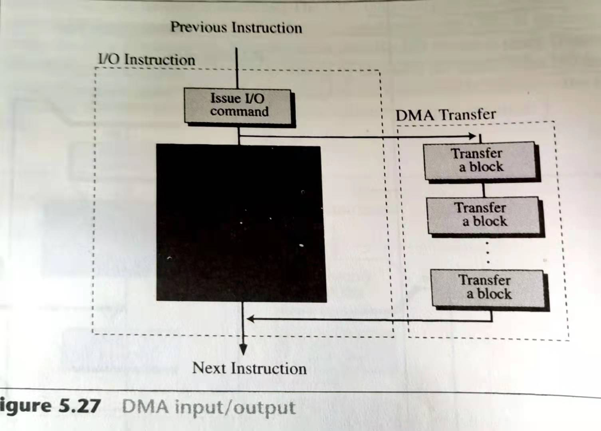

I/O如何与CPU交流
1.I/O端口的编址方式及特点：
1.独立编址方式(Isolated I/O):
统一编址方式是从存储器空间划出一部分地址空间给I/O设备，把I/O接口中的端口当作存储器单元一样进行访问，不设置专门的I/O指令，有一部分对存储器使用的指令也可用于端口。
统一编址优点是指令类型多、功能齐全，不仅使访问I/O端口可实现输入/输出操作而且可对端口进行算数逻辑运算、移位等；另外能给端口较大的编址空间。缺点是端口占用了存储器的地址空间，使存储器容量减小，另外指令长度比专门I/O指令长，因而执行速度较慢。

2.独立编址方式(Memory-Mapped I/O):
独立编址方式使接口中的端口地址单独编址而不和存储空间合在一起。
独立编址方式的优点是I/O端口地址不占用存储空间；使用专门的I/O指令对端口进行操作，I/O指令短执行速度快；并且由于专门I/O指令与存储器访问指令有明显的区别，使程序中I/O操作合存储器操作层次清晰，程序的可读性强。
缺点是指令少，只有输入与输出功能。是从存储器空间划出一部分地址空间给I/O设备，把I/O接口中的端口当作存储器单元一样进行访问，不设置专门的I/O指令，有一部分对存储器使用的指令也可用于端口。

2.CPU与I/O之前的数据传递方式：
因为CPU与I/O之间处理数据的速度不同，那么在计算机中需要一种方式来使两者的速度进行同步，这样才能便于数据的传递。
（1）查询控制方式（Programmed I/O）：
CPU通过程序主动不断读取状态寄存器以了解接口情况，知道寄存器准备成功才能完成相应的数据操作。查询操作需要在时钟周期较少的间隔内重复进行，因而CPU效率低。

（2）中断控制方式（Interrupt-Driven I/O）：
当程序常规运行中，若外部有优先级更高的事件出现，则通过中断请求通知CPU，CPU再读取状态寄存器确定事件的种类，以便执行不同的分支处理。这种方式CPU效率高且实时性好。即CPU不再持续读取寄存器状态，而主动等待寄存器准备，在等待时间内，CPU可以执行其他操作，当寄存器准备好后，就会主动中断CPU的操作进行数据运输。

（3）DMA（Direct Memory Access）控制方式：
顾名思义，直接内存存取即数据传送的具体过程直接由硬件（DMA控制器）在内存和IO之间完成，CPU只在开始时将控制权暂时交予DMA，直到数据传输结束。这种方式CPU空闲时间明显比其他方法短暂，因此可以处理更多操作，传送速度比通过CPU快，尤其是在批量传送时效率很高。
